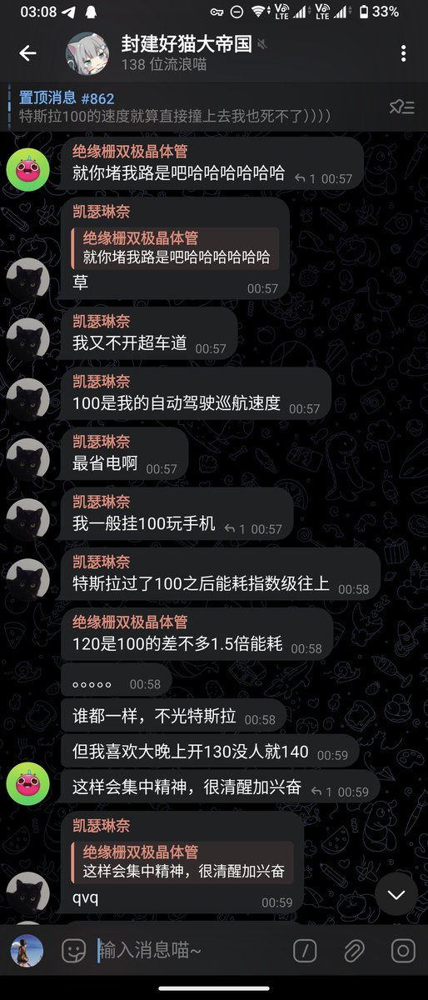
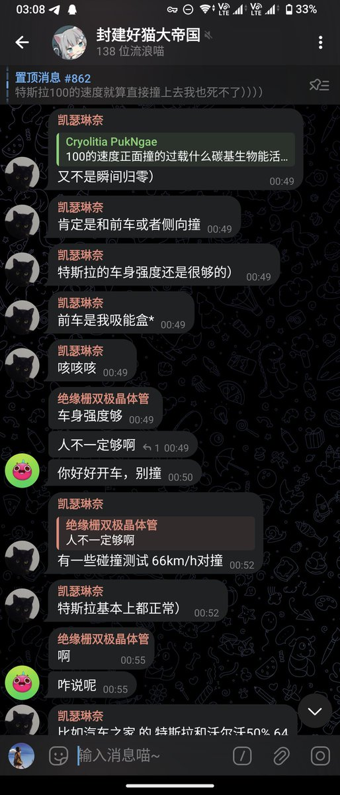
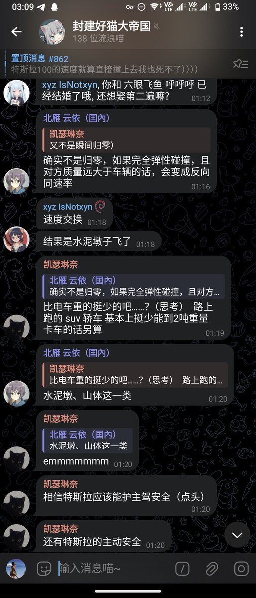

北雁冬翼（simone luxem）🏳️⚧️🏳️🌈🔬
@Simone_Luxem
而且居然还是特斯拉？？？



北雁 Na₃AlF₆
@BeiyanNa3AlF6
@KiraRettosei @MeowCatherina 我极少这么公开挂一个人，但是我不得不由衷希望这位出事的时候别祸害到其他正常驾驶的车辆和ta车里的乘客，我以后也不会再碰这位一次了。
「挂100玩手机」对汽车毫无敬畏之心，「相信xxx能护主驾」对同车其他乘客毫无同情之心。 https://t.co/jjd8jvm2qt